ICEGJ Introduction
The 1st International Conference and Exhibition on Green Jobs for a Net-Zero Future (ICEGJ) is a key dissemination and networking activity of the TUNE Project under the Erasmus+ CBHE programme. The event supports the project’s mission to strengthen green skills education, improve graduate employability, and promote collaboration among universities, industry, policymakers, and international partners across ASEAN and Europe.
Amid global climate change, energy transition, digital transformation, and sustainable development commitments, demand for green jobs and future-ready skills is growing rapidly across sectors such as energy, transport, agriculture, buildings, forestry, waste management, artificial intelligence, and digital technologies. The conference provides an international platform for policy dialogue, academic exchange, industry engagement, and partnership development related to green jobs, sustainability transitions, and workforce transformation.
The exhibition will showcase green technologies, educational initiatives, student innovations, startup ideas, and practical industry solutions that support sustainable development and green career pathways. Through demonstrations, networking sessions, innovation showcases, career-oriented activities, and partnership meetings, the event aims to strengthen education–industry linkages and create new opportunities for ASEAN–EU collaboration.
Conference Venue
The 1st International Conference and Exhibition on Green Jobs for a Net Zero Future is organized at Hanoi University of Science and Technology (HUST), Vietnam.

Leadership & Secretariat
Conference Chairperson
- Assoc. Prof. Huynh Dang Chinh - Chairman Vice President of Hanoi University of Science and Technology, Vietnam
- Prof. Dr. Florentina Kusmiyanti - Co-Chairman Universitas Diponegoro (UNDIP), Indonesia
Secretariat
-
Dr. Nguyen Huu Linh
Hanoi University of Science and Technology, Vietnam
Keynote Speakers
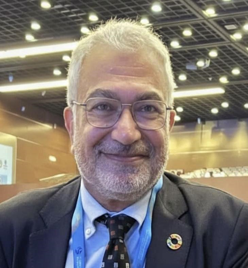
Presentation Topic
Building Resilience, Building Careers: Nature-Based Solutions as a Frontier for Green Jobs in Urban Water Management
Urban areas worldwide face intensifying flood risk driven by rapid urbanization, climate change, and the loss of natural hydrological buffers. Conventional grey infrastructure ...
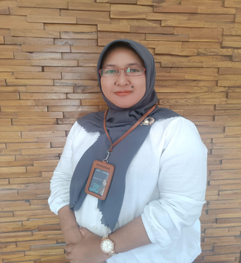
Presentation Topic
Life-Cycle Engineering and Green Jobs: Transforming Infrastructure Inspection and Maintenance for a Net-Zero Future
The transition towards a net-zero future is reshaping the civil engineering profession by creating new opportunities for green jobs that extend beyond the conventional focus on the design and construction...
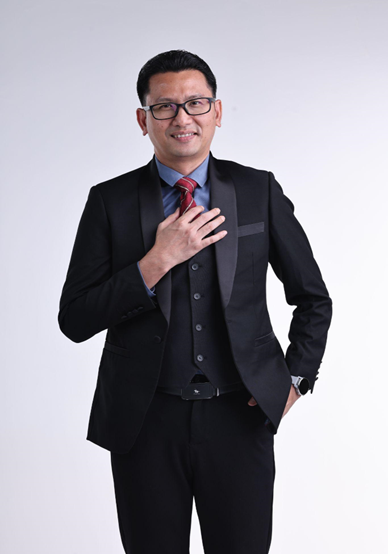
Prof. Ir. Ts. Dr. Mohd Fadhil bin Md Din
Universiti Teknologi Malaysia
TUNE ERASMUS Coordinator (2024 - 2027)
Presentation Topic
From Green Skills to Green Impact: Transforming Education through Industry-Responsive Micro-Credentials and Competency Ecosystems
The accelerating green transition is exposing a critical mismatch: economies are creating sustainability commitments faster than education and training systems...
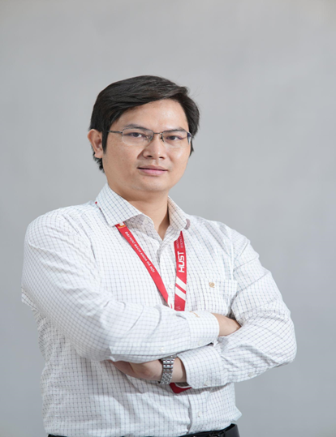
Presentation Topic
Vietnam's Energy Transition: Capacity Building for a Sustainable and Net-Zero Future
Vietnam is undergoing a rapid energy transition driven by strong economic growth, increasing electricity demand, and its commitment to achieving net-zero greenhouse gas emissions by 2050...
Invited Speakers
Presentation Topic
Green Ammonia Combustion: Technology Development and Demonstration Strategy in Korea
Amid the global transition toward carbon neutrality, ammonia (NH₃) is emerging as a key carbon-free fuel and hydrogen carrier for decarbonizing coal- and LNG-fired power generation...
Presentation Topic
Life-Cycle Engineering and Green Jobs: Transforming Infrastructure Inspection and Maintenance for a Net-Zero Future
The transition towards a net-zero future is reshaping the civil engineering profession by creating new opportunities for green jobs that extend beyond the conventional focus on the design and construction...
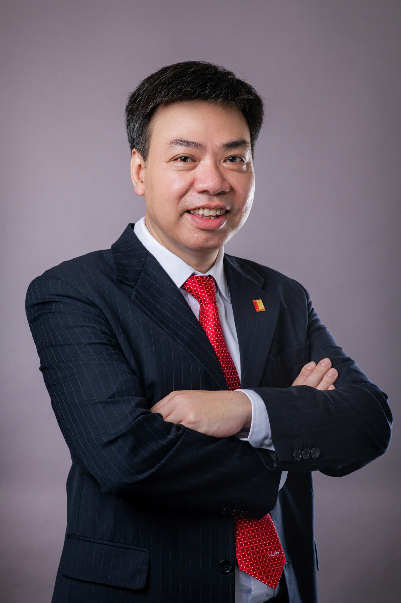
Presentation Topic
Special Invited Talk in Green Jobs and Sustainability Transitions: Opportunities and Challenges for Vietnam (tentative title)
The content will be announced soon...
Presentation Topic
Market Overview: From Global Momentum to Local Impact in Vietnam
The content will be announced soon...
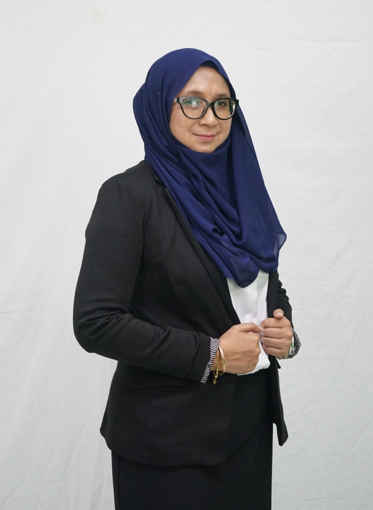
Dr. Sabihah Saleh
Director, Standards and Certification
Malaysian Green Technology and Climate Change Corporations (MGTC)
Presentation Topic
From Policy to Practice: Transforming Malaysia’s Climate Commitments into Green Job Opportunities
As nations accelerate their transition toward a green, low carbon, and climate resilient economy; government policies...
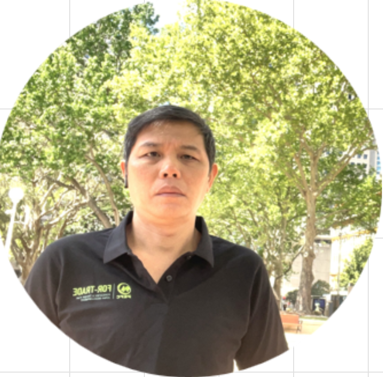
Presentation Topic
How Forest Carbon Credits Work with Vietnam Carbon Market
The Vietnam Law on Environmental Protection 2020 establishes the key legal framework for reducing greenhouse gas (GHG) emissions...
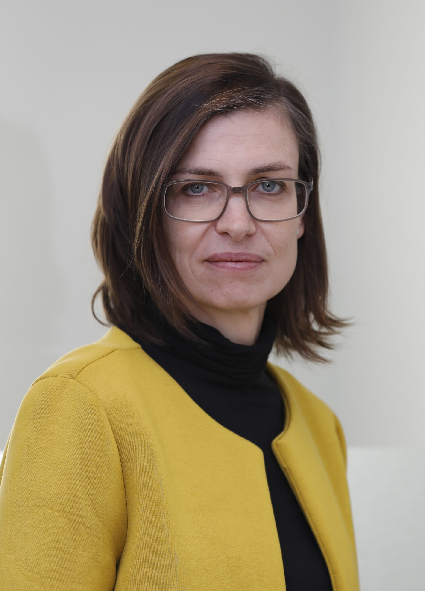
Ms. Beate Dippmar
Cluster Coordinator for TVET
Project Director of the “EU-Viet Nam TVET programme
Presentation Topic
Centre of Excellence for Green TVET: A Scalable Model
The transition to a green economy requires TVET systems to do more than develop green skills and qualifications...
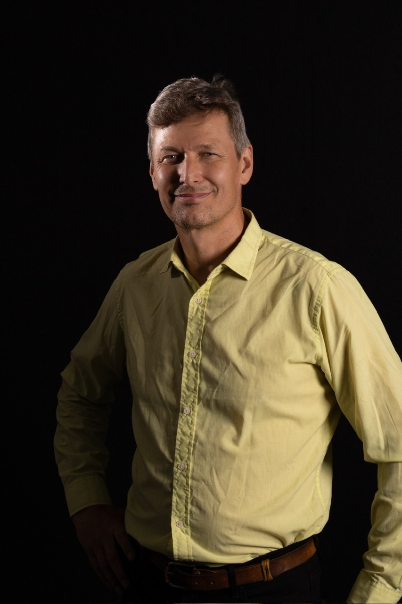
Presentation Topic
The Plastic Cup in the Sustainability Classroom: Closing the intention–behaviour gap in education for green jobs and future skills
Sustainability courses promise a lot: competence frameworks, SDG grids, ...
Presentation Topic
Green Skills in Action: Engineering a More Sustainable Future
Buildings and industry account for a significant share of global energy use, much of which is associated with ventilation and cooling...
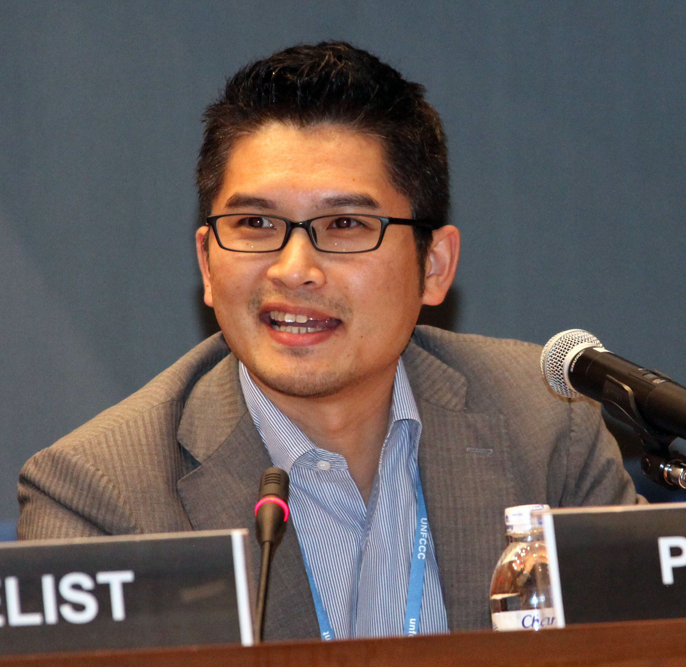
Mr. Kato Makoto
Member, Board of Directors/General Manager
Overseas Environmental Cooperation Center, Japan
Presentation Topic
Scaling Refrigerant Lifecycle Management and Circular Economy in Viet Nam: Lessons from Japan and the Role of Carbon Markets
Japan has established a comprehensive refrigerant lifecycle management (LRM) system under the Act...
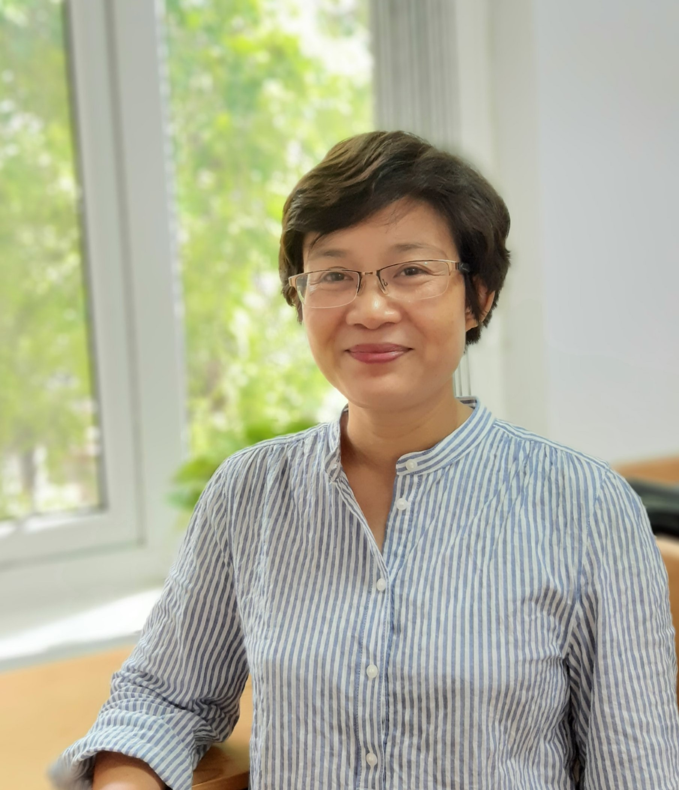
Presentation Topic
Greening Technical and Vocational Education and Training for the Green Transition: An Integrated Multi-level Framework
The green transformation is reshaping labour markets and increasing the demand for workers equipped with green skills...
Presentation Topic
Building a Green Business Ecosystem: Opportunities, Challenges, and Future Skills
The green transformation is reshaping labour markets and increasing the demand for workers equipped with green skills...
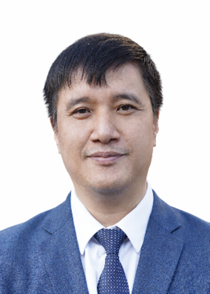
Presentation Topic
Low-Carbon and Sustainable Construction Materials: R&D Experiences from Hanoi University of Civil Engineering
The transition toward a net-zero future requires significant changes in the construction industry, particularly in the development and application ...
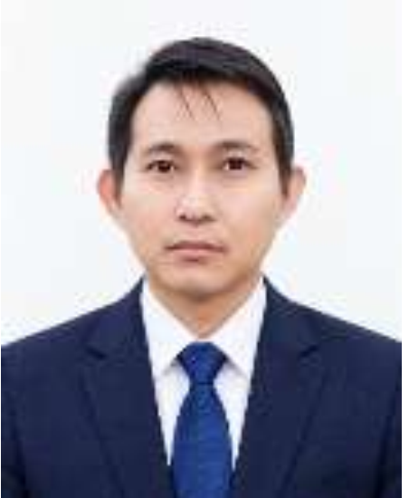
Presentation Topic
Training Models, Innovation and ASEAN–EU Cooperation
Green skills become meaningful when students connect environmental principles with tasks they can observe, practise, and explain....
Presentation Topic
GREEN CLIENTS REQUIRE GREEN MIND SETS OF ENGINEERING
“Green Clients” want to build “Green Projects” which can help them with good benefits of tax, import/export priority....
Presentation Topic
Invited Lecture: Title to be Announced
Invited Lecture: Title to be Announced....
Committees
Organizing Committee
Scientific Advisory Committee
Conference Proceedings
The Conference Proceedings containing the extended abstracts presented will be distributed in USB. The USB will include papers accepted for presentation, provided at least one author has pre-registered by the deadline.
Journal Publications
Selected and qualified papers will be recommended for publication in the special issue of:
Contact & Enquiries
For any inquiries regarding the conference, paper submission, or registration, please do not hesitate to reach out to our secretariat.
linh.nguyenhuu@hust.edu.vnOrganizers & Sponsors